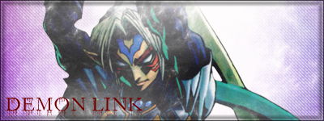

Mamamia! That cloud has a face!
Mario's Mistake ~ 1-upisland.com
Mario's Mistake ~ 1-upisland.com


I REVEIL MISELF!1!!!seven!1
Ruin your life by clicking this.
*read above*
I hate both pictures, but you guys finally get to see me. (The first one I look awkward, and the second one I'm smiling kind of off-center, but whatever.)
This is me!

Quote: HermosHermos: I LIKE PONIES!!
Quote: TwistkillN IS TEH GHEY!!!

I feel like I'm not dong anything significant here, guys. I feel like... I'm not contributing anything major here besides tending to heaps of newbies who don't read the manuals, which almost everyone can do anyways.
Atilla has the College for Ninja, BWD has this new mp3 project in addition to the Drone Factory, there are lots of level packs which at least 30+ people in total have been a part of, there's lots of graphics/signature makers, there are loads of map-makers, there are a handful of comic-makers, plenty of highscorers... and I am not a part of any of those, besides making maps, which mine are of subpar quality. I just don't know. I don't know what my place is here...
I don't even know where I'm going with this, and I have to go to bed now. I'll continue this later..
You are the one that shpwed me how awesome and addicting N was, and I thank you for that  . You help me with everything here as well.
. You help me with everything here as well. And I'm not looking for the best in the whole forum. Anything is nice.
And I'm not looking for the best in the whole forum. Anything is nice.A word in your shell-like Limer...Thanks man. i really needed that. *Amends his ways*
Would you kindly try to clean up your posts? For example, check for typos/grammar, and format it to look tidy.
They are, in my opinion, getting lazier and lazier (no offence meant).
This is how they currently look:
dude, your one of the politest people on these forums. your allways just and fair. you help everyone. if you were'nt around, this place would fall apart, litterally. i mean, hey, i don't contribute that much, and people wouldn't miss me much if i buggered off. but if you leave, whole wars will break out!!And how they should try to be:
Quote: AmendedDude, you're one of the politest people on these forums, you're always just and fair.
You help everyone, and if you weren't around, this place would fall apart, literally.
I mean, hey, I don't contribute that much, and people wouldn't miss me much if I left here, but if you leave, whole wars will break out!
Just trying to help you
I think McP needs to find his exploding head picture...
*pees in the corner*What the heck TK! LOL.

Going through the oldies:
ZZ9:
+
Rockage=Farrel
Hermos
+
Update: Heh. It's now 5 am... so, maybe tomorrow.
what is your opinion of yourself.
do you like yoursself, dislike yourself, hate yourselff.
also, what do you think other people think of you?

Wow. Those were done in paint? Very nice job, you have talent.
Very, very nice.
The second one is Midna? That's really good, Hermos.
Don't post the true form, because lots of people would rather have that be a surprise.
 .
.Every time I see a couple at my school, it looks llike the two of them hardly even like each other for some reason. They show themselves off as if they were sooo cool with some guy/girl with them. I have concluded that the idea of love is inept and that these relationships are like clothes, bling, or cute pictures of puppies in someone's wallet. I noticed that those who are considered "popular" are the ones who get all the guys. I even think hat the guys are totally shallow, because the girls act like bitches and the guys don't even notice or care. A relationship is used to show off your popularity at my school, but I'm glad that there are legitimate couples which are actually happy together.
Your opinions on this?
he announces that he's going to eat his child's placenta.What on earth?!
Let's see...
I hate racists, school, dumbass teachers who know nothing of what they're teaching, people who think everyone should follow their religion, jackasses, dumbasses, movies nowadays, taking credit for other people's work, animal abuse, whores, people who use "1337speak" all the time ESPECIALLY on forums, and finally, people who think they're above everyone else.
Good enough rant?
damn man, those are good, my least fav is the 1st one though
The last 2 are all apsolutly amazing.
They're good, but I'm not all that into Pokemon.
You didn't even say it right.
Good. I was wondering how to do it for awhile, and never figured it out. So now, I have you.You could go to signaturebar.com and animate it there.
Any way, thanks for this. I'll get back to you with a request.
I'm surprised you did those in paint. If it had been freehanded, I would have said that my artistic eight year-old friend could do that, yet I congratulate since it is otherwise.
They're very good, but what are the pictures of?
I like Raviel and Harmon the best...
Im gunna be honest here, the human pictures are fairly bad, but the dragons/monsters are ace.
This is something my friend realized. I think it's pretty accurate.
Eragon is a rip-off of star-wars. (with some lord of the rings in there too.) essentially, they're both stories about boys from back-country farms in a part of a great empire ruled by a cruel magic (force) wielding elite. The boy then finds a dragon (light saber) and master. (obi-wan and that other dude from eragon.) while they're out training, his adopted families house is attacked, and his adopted family dies. (okay, his brother doesn't die in eragon, but it's a small difference.) He then goes with his master on to join with the rebels. On the way, they encounter Durza (one of the facets of Darth Vador, the other is the dead one who is his father.) and he kills his master, but the boy rescues the elf-lady. (the princess) They then continue to the rebel base, and then assist the rebels, and during the climactic battle, the boy is instrumental in the destruction of the enemy forces, (deathstar) in part becuase of his natural underdstanding of magic. (the force) I don't know as much about the second book, but I know that at the end, the boy finds out that the evil right-hand man to the emperor is his father.
I found that all rather striking and funny. what do you think? creditable?
No text in them though 6/10 Bad quality
Edit, once you see this, try refreshing a couple of times")

I H4V3 N0 C0NC3PT10N 0F WH4T 1T 1S. I'm saying 7/10.

Thanks Jakel.
Here's a sigtag for those who love Twistkill.
Not to take away Templex's job, but Twistkill is special.

He said photoshop. Why did you come in here and post that if it has nothing to do with this topic?
Sheesh.
I can't do that well..but I'll try when I get home.Cool... though it's pretty complex and messy...





Heh, I remember when you first showed me this one. It's great, but I know you can do way better.

For posting your images here, one good image host is Imageshack. It accepts several file types up to 1.5 MB, and it requires no registration. Upload it, copy the code it gives you that says "Direct Link to Image", and post it wherever you need to, following the proper [IMG] tag procedure. Quick, simple, provides plenty of website codes, and it's popular.
Another good one is Tinypic. Requires no registration just like Imageshack, although I've never used it...
As for actually making images, I cannot help you there, sorry. I'm sure there's plenty of other guys around here who would be willing to help, though. [/img]

Imageshack now requires you to registure ._. Sorry to burst your bubble...Um... no, it does not... It offers registration so you can have a gallery for your images, but it's not required to upload one. Besides, registration only takes a few minutes.
Very nice signatures. You're going to have to teach me how to make those.
Hmm... this might be interesting. You newbs have a lot of competition! Especially with team 2, 3, and 4! Team 2, 3, and 4 has the best image masters I've ever seen! Read up on tuts at Pixel2life.com! I know I'll be reading.
Could it be that I use a Macnintosh with safari instead of intenet? why dont you copy the code and then post it somewhere and look at it?
GOTRM can you see my siggy?
Hermos are you really a girl?
please.
=)
Stupid camera adds weight... I thought I looked really cool when I was looking at myself but now I see the picture makes me look fater...
DWhy not. This was taken just before heading off to a wine and cheese party a few months ago.

One entry!?!?!?!
Blue Crimzon
Cooperation: 7/10
Creativity: 6/10
Overall Look: 5/10
Total: 18/30
They don't work well together, they also don't really show how the prgorams differ and I really don't like the contrast in the image.

Guys, complaining about the font size doesn't seem too plausible, seeing as that image isn't full-size, so everything will look bigger than shown if it's actually to be put onto a website...Banner IS huge, and I don't think MN is all about N.
Although that banner really does seem too large.
YOUR RESISTANCE... IT ONLY MAKES MY PENIS HARDER!!

Quote: xdude, March 23, 2007 03:14 amI am obviously bored.To the max.
ok... well ill take the avatar hermos
I'm not on there?
Neither is Clifty...
D. I think that image is cute too .I almost never remember my dreams unless they were unusual or awkward.
Drain Storm is the greatest turn-based top-down combat game. EVAR.Download it! Now!! You must

. .
.

Owned.
The one card to ban them all.
The one card to ban them all.ONLY ONE CARD CAN STOP THAT!!!!!!!!!!!
HAXXOR!!HAXXOR cannot beat Kero because he bans him when he is played
Owned. *ban in this case means like beats the crap out of him*Ouch, that is some bad stuff...I feel for ya.Didnt you hear him? He's moving to Canada, it cant be for the best...
But at least you have a home in Canada!
Good luck in your new life, it'll be tough leaving your friends behind, but sometimes it may be for the best.
We're all here to support you though if times get tough, right guys?
sorry mate, eh?
QuotePick the month you were born:
>
> January---------I kicked
> February-------I loved
> March----------I karate chopped
> April-----------I licked
> May------------I jumped on
> June------------I smelled
> July------------I did the Macarena with
> August---------I had lunch with
> September-----I danced with
> October--------I sang to
> November------I yelled at
> December------I ran over
Pick the day (number) you were born on:
> 1--------a birdbath
> 2--------a monster
> 3--------a phone
> 4--------a fork
> 5--------a snowman
> 6--------a gangster
> 7--------my cell phone
> 8--------my dog
> 9--------my best friends' boyfriend
> 10-------my neighbor
> 11-------my science teacher
> 12-------a banana
> 13-------a fireman
> 14-------a stuff ed animal
> 15-------a goat
> 16-------a pickle
> 17-------your mom
> 18-------a spoon
> 19-------a smurf
> 20-------a baseball bat
> 21-------a ninja
> 22-------Chuck Norris
> 23-------a noodle
> 24-------a squirrel
> 25---- ---a football player
> 26-------my sister
> 27-------my brother
> 28-------an ipod
> 29-------a surfer
> 30-------a llama
> 31-------A homeless guy
Pick the color of shirt you are wearing:
> White--------because I'm cool like that.
> Black---------because that's how I roll.
> Pink----------because I'm NOT crazy.
> Red----------because the voices told me to.
> Blue----------because I'm sexy and I do what I want.
> Green---------because I think I need some serious help.
> Purple--------because I'm AWESOME!
> Gray----------because Big Bird said to and he's my leader.
> Yellow--------be cause someone offered me 1,000,000 dollars.
> Orange -------because my family thinks I'm stupid anyway.
> Brown--------because I can.
> Other---------because I'm a Ninja!
> None----------because I can't control myself
I don't press it. I beat that game.
If you press this button, you will have an ingrown toenail.
If you don't, when you will die, it will be the most painful time for you.

I sang to a banana because that's how I roll.*saves that for personal laughter*


 +
+ 


If they were made from boredom, I'd like to see what the outcome would be if you really put your mind into it.
that last one is REALLY really good, nice work
just me being picky but the character in the last one is a little pixelated round the edges


These are amazing. In the last batch, it would've been nicer if the text had a higher opacity, but they're breathtaking.